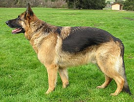
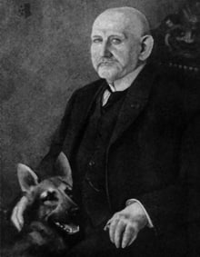
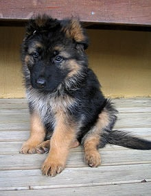
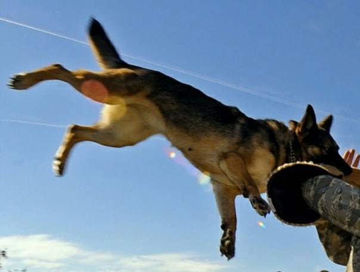
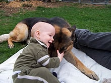

Место: Германия
Время: Конца XIX века
Характеристика
Рост: кобели - 60-65см суки - 55-60см
Вес: Кобели - 30-40кг Суки: 22-32кг
Немецкая овчарка — порода собак, изначально использовалась в качестве пастушьей и служебно-розыскной собаки. Немецкая овчарка была получена в результате селекции и скрещивания некоторых разновидностей гуртовых собак Центральной и Южной Германии. Различают гладкошёрстную и длинношёрстную разновидности. В наше время немецкие овчарки участвуют в выставках, а также используются для охраны, занятий кинологическими видами спорта, а также как собаки для семьи.

Макс Эмиль Фредерик фон Штефаниц - основатель породы собак Немецкая овчарка и первый президент Ассоциации любителей породы собак немецкая овчарка (Verein für Deutsche Schäferhunde) (на фотографии вместе со своей собакой - первой в истории зарегистрированной немецкой овчаркой по имени Грайф (Horand von Grafrath)) Определяется два основных центра происхождения, а именно на нынешней территории Скандинавии и Северо-Западной России. Существует мнение, что при формировании породы подмешивали крови индийского волка. Немецкая овчарка как культурная, заводская порода существует менее ста лет. Но она имеет более длительную историю как аборигенная порода, созданная пастухами и крестьянами Германии, на протяжении нескольких веков отбиравших только самых подходящих для работы собак. Немецкая овчарка как заводская порода была выведена в конце XIX века. Своим официальным рождением порода обязана усилиям основателей Клуба (Ассоциации) любителей породы собак немецкая овчарка (Der Verein für Deutsche Schäferhunde), во главе которого стоял ротмистр Макс Эмиль Фредерик фон Штефаниц, по праву считающийся крестным отцом этой породы собак. Широта взглядов фон Штефаница позволила ему без всякой предвзятости оценивать различные типы овчарок, чтобы создать некий универсальный тип. В основу будущей породы лёг один-единственный принцип: «Немецкой овчаркой считается любая пастушья собака, обитающая в Германии, которая, благодаря постоянным тренировкам её качеств пастушьей собаки, достигает телесного и психического совершенства в рамках своей утилитарной функции». Первый официальный представитель немецкой овчарки был кобель по кличке Грайф грязно-белого окраса. Он был показан на выставке в Ганновере в 1899 году и первым внесен в родословную книгу немецких овчарок. Выведение породы, организованное и поставленное с национальным размахом, быстро прогрессировало благодаря объединённым усилиям немецких заводчиков пастушьих собак. В 1899 году немецкая овчарка впервые была официально показана на выставке собак.

Щенок немецкой овчарки
Стандарт породы немецкая овчарка был впервые составлен Штефаницем и Майером в 1899 году. Первоначальный текст был дополнен на шестой ассамблее членов SV, происходившей 28 июля 1901 года, на 23-й ассамблее, состоявшейся 17 сентября 1909 года в Кёльне, на собрании Совета директоров и Консультативного комитета в Висбадене 5 сентября 1930 года и на заседании Комиссии по разведению и Совета директоров 25 марта 1961 года. Затем текст был пересмотрен Всемирным союзом обществ любителей немецкой овчарки (Weltunion der Vereine für Deutsche Schäferhunde WUSV) и принят на заседании WUSV 30 августа 1976 года. Ещё раз стандарт был переписан и реструктурирован 23—24 марта 1991 года. За исключением небольших изменений этот стандарт остается актуальным до сих пор.

Дрессированная немецкая овчарка задерживает «нарушителя» (Военно-воздушные силы США)

Собаки этой породы прекрасно ладят с детьми Немецкая овчарка универсальна. Она одинаково хорошо может служить собакой-компаньоном, охранной, защитной, сыскной, служебной и караульной собакой. Успешно используется в животноводстве как пастушья собака. Чаще других пород используется на службе в армии, в полиции, для охраны государственных границ. Хорошо выдрессированная немецкая овчарка незаменима при задержании преступника. Используется для сопровождения слепых. Прекрасно ладит с детьми. Однако, как и любая крупная собака нуждается в наблюдении и контроле при общении с детьми. Не стоит оставлять немецкую овчарку наедине с детьми, особенно с маленькими, во избежание травм и несчастных случаев.
| Заголовок таблицы №1 | Заголовок №2 | Заголовок №3 | Заголовок №4 | Заголовок №5 | Заголовок №6 | Заголовок №7 | Заголовок №8 | Заголовок №9 | Заголовок №10 |
|---|---|---|---|---|---|---|---|---|---|
| Первая яцейка | 2 | 3 | 4 | 5 | 6 | 7 | 8 | 9 | 10 |
| 1 | 2 | 3 | 4 | 5 | 6 | 7 | 8 | 9 | 10 |
| 1 | 2 | 3 | 4 | 5 | 6 | 7 | 8 | 9 | 10 |
| 1 | 2 | 3 | 4 | 5 | 6 | 7 | 8 | 9 | 10 |
| 1 | 2 | 3 | 4 | 5 | 6 | 7 | 8 | 9 | 10 |
| 1 | 2 | 3 | 4 | 5 | 6 | 7 | 8 | 9 | 10 |
| 1 | 2 | 3 | 4 | 5 | 6 | 7 | 8 | 9 | 10 |
| 1 | 2 | 3 | 4 | 5 | 6 | 7 | 8 | 9 | 10 |
| 1 | 2 | 3 | 4 | 5 | 6 | 7 | 8 | 9 | Итог: Таблицу создал! |